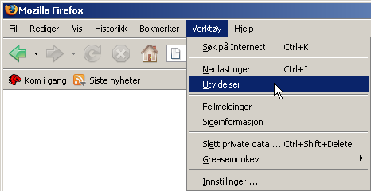
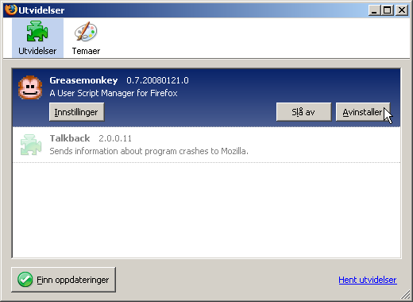
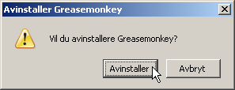

Avinstaller “Siste fra dine Favoritter”
på Urørt
For å avinstallere Urørt bruker-scriptet trenger du kun
avinstallere Greasemonkey utvidelsen for Firefox:
-
I Firefox velger man Utvidelser i Verktøy
menyen.

-
Man klikker Avinstaller for Greasemonkey i
Utvidelser vinduet.

-
Man må godta avinstalleringen ved å klikke på
Avinstaller i valgboksen som kommer frem.

-
Greasemonkey og Urørt bruker-scriptet blir nå fjernet
neste gang du avslutter Firefox.
Dra tilbake til Urørt.